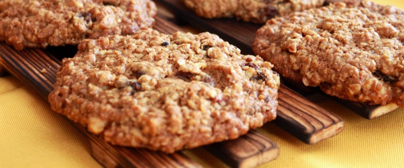

приготовление:
-
Оставить 180 гр. сливочного масла на столе, чтобы оно стало комнатной температуры. Разогреть духовку до 180 градусов. Размять масло вилкой в миске, смешать с 1 стаканом сахара (не досыпая до верху 1см.). В получившуюся смесь добавить 1 ч.л. корицы, пакетик ванилина, 0.5 ч.л. соды. Перемешать.
-
Добавить 1.5 стакана овсяных хлопьев. Нарезать 300 - 350 гр. любых сухофруктов и смешать с тестом. Вбить 2 яйца, размешать, добавить 1.5 стакана муки. Вымесить до однородного состояния. Тесто будет липнуть к рукам, оно не должно отставать от рук и быть забитым мукой.
-
Влажными руками сформировать печеньки, выкладывать их на смазанный подсолнечным маслом противень или пекарскую бумагу. Выпекать 20-25 минут. Выложить на тарелку, дать немного остыть.